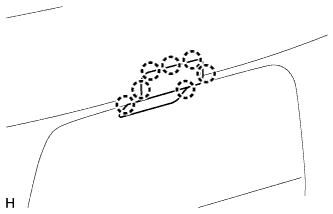
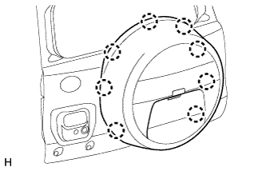

ТЕЛЕКАМЕРА (задняя) (для моделей с кронштейном запасного колеса) > СНЯТИЕ |
| 1. СНИМИТЕ НАКЛАДКУ ЧЕХЛА ЗАПАСНОГО КОЛЕСА |
|  |
Освободите 7 захватов и переместите накладку чехла запасного колеса, чтобы она не мешала.
| 2. СНИМИТЕ ЧЕХОЛ ЗАПАСНОГО КОЛЕСА |
 |
Выверните болт.
Переместите рычаг.
|  |
Освободите 8 захватов и снимите чехол запасного колеса.
| 3. СНИМИТЕ ЗАПАСНУЮ ШИНУ |
| 4. СНИМИТЕ ЧЕХОЛ ЗАПАСНОГО КОЛЕСА № 2 |
 |
Выверните 4 винта и снимите чехол запасного колеса № 2.
| 5. СНИМИТЕ КРОНШТЕЙН ТЕЛЕКАМЕРЫ |
 |
Отсоедините разъем и зажим.
Выверните 2 болта и снимите кронштейн телекамеры с задней телекамерой.
| 6. СНИМИТЕ ЗАДНЮЮ ТЕЛЕКАМЕРУ В СБОРЕ |
 |
Отсоедините разъем и снимите жгут проводов заднего окна № 2.
Выверните болт и снимите заднюю телекамеру.